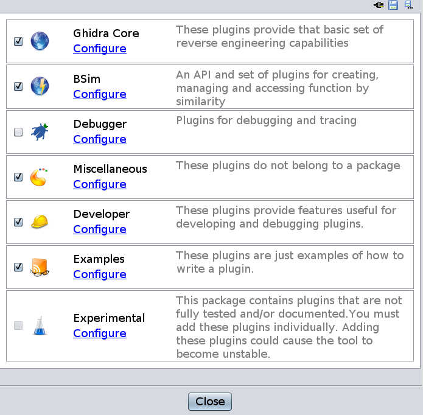

Starting Ghidra and Enabling the BSim Plugin:
To begin the tutorial, perform the following steps:
- Launch Ghidra.
- Create a new non-shared project for this tutorial.
- Launch the Code Browser.
To enable BSim, perform the following steps:
- File -> Configure from the Code Browser.
- Click on the
Configure link of the BSim entry.
- In the resulting dialog, ensure that the checkbox for
BSimSearchPlugin is checked.

Next Section: Creating and Populating a BSim Database from the GUI